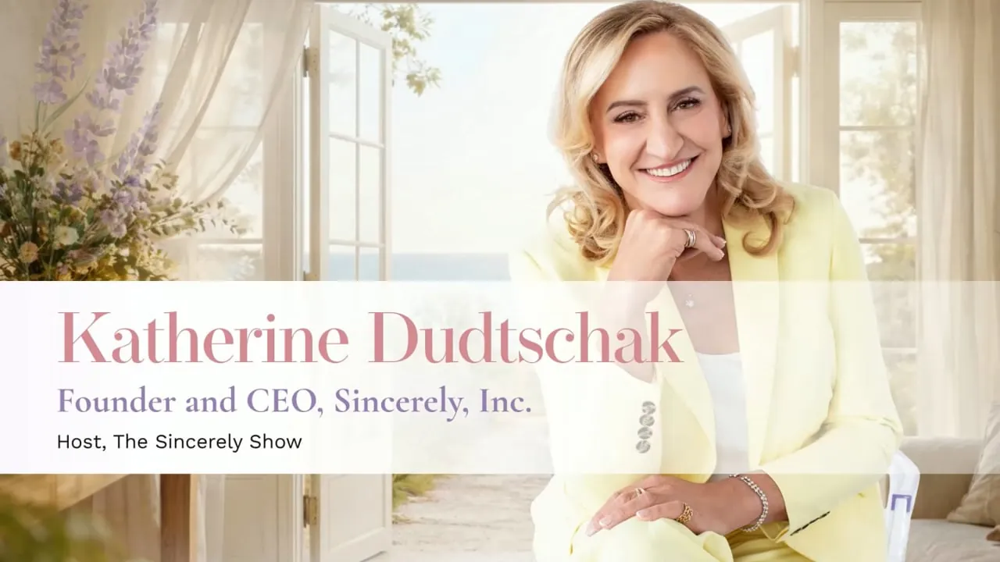
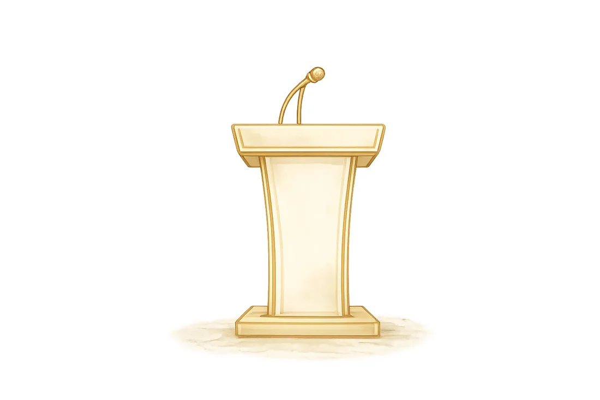
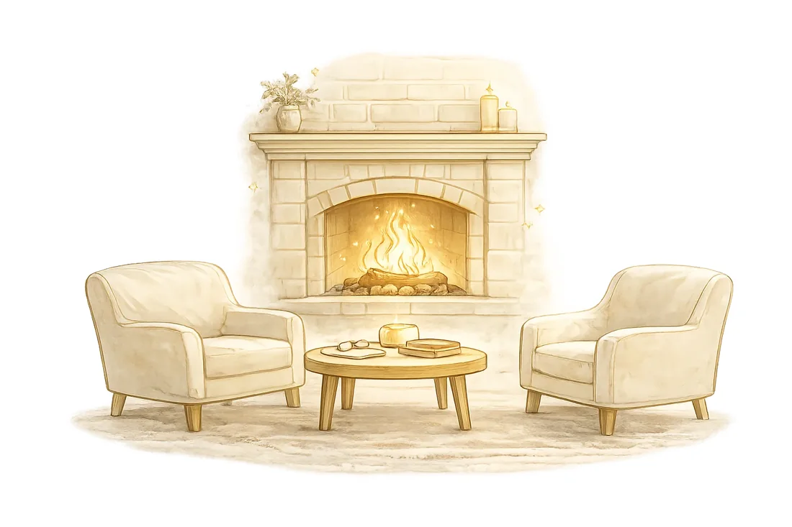
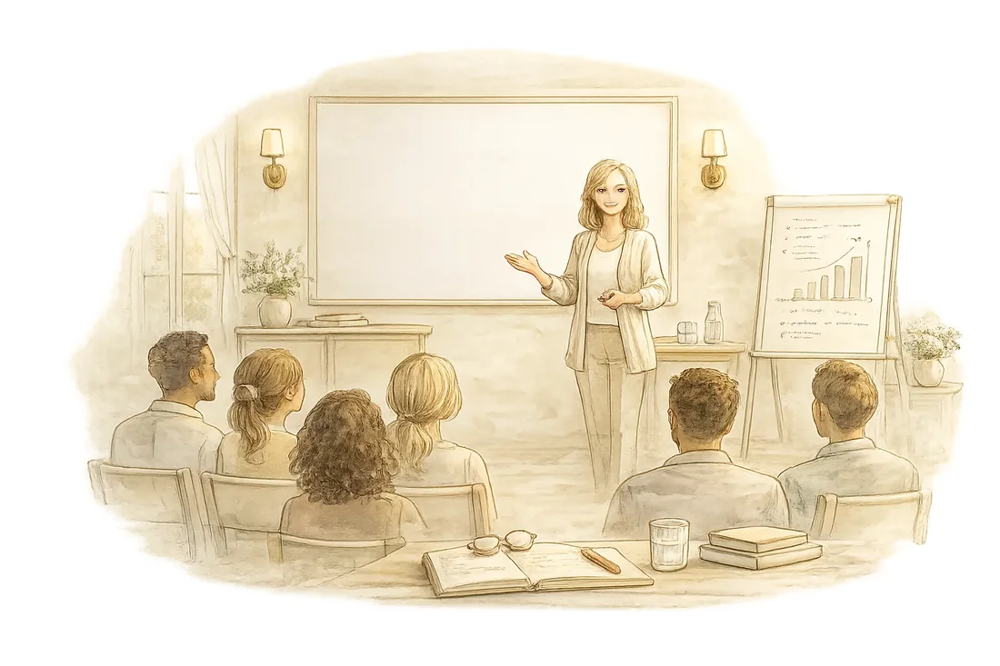
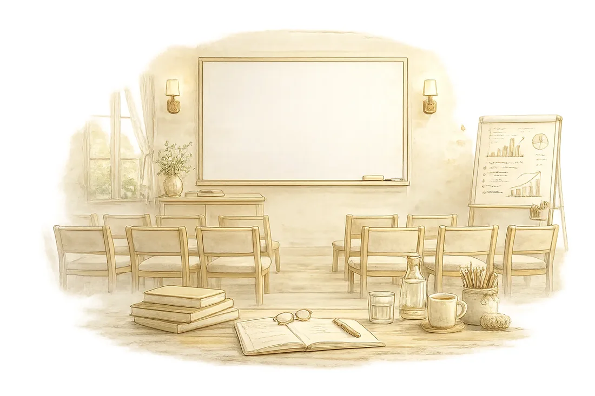
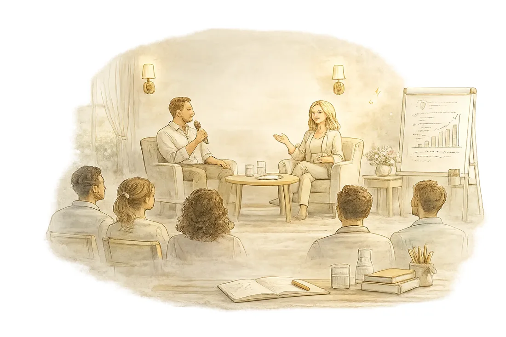

Speaking
When Katherine takes the stage, something shifts in the room.

Watch Katherine speakShe served as CEO twice and spent four decades at the highest levels of global business. The talks she gives now are different from the ones she gave then.
She no longer speaks to inform or impress. She speaks to open something in the room.
To help people feel, for a moment, that the sincere life might actually be possible. That wholeness is within reach. That they are not alone in wanting something more human from their work and their world.
When Katherine leaves the stage, people often say the same thing
I felt seen. I felt understood. I felt hope.
A life that has spanned worlds
Her work sits at the intersection of structure and humanity, where humility, performance, identity and leadership meet. She speaks from the full arc of that journey.
- From the child of war-surviving immigrants on a rural Canadian farm to the highest levels of global finance.
- From a pattern-seeing, systems-oriented mind to leading complex organizations at scale.
- From carrying a gender truth in silence for fifty years to affirming it in front of eighty thousand colleagues.
- From living in both a man’s world and a woman’s world to integrating the perspective of both.
Four talks
Her talks unfold as conversations, as stories, as invitations. She speaks to hearts and to strategies, and audiences leave with both feeling and framework.
The leadership we need now
We are living through what feels like four converging existential crises: social fracture, economic fragility, planetary breakdown, and the overwhelming proliferation of information and disinformation that accelerates them all. Katherine believes these outer crises mirror our inner imbalance.
She speaks about the extractive and performative systems we have built that reflect our fear and fragmentation, and the regenerative and coherent systems that become possible when we live from greater wholeness, humility, compassion and love. This talk explores what leadership looks like when we solve problems from kindness and curiosity rather than fear and control.
The bridge between worlds
Katherine has lived in both the masculine and feminine worlds. She has led with structure and learned to lead with flow. She has achieved and she has surrendered.
This talk explores what becomes possible when we stop choosing sides and start integrating: in ourselves, in our organizations, in our world.
From hiding to wholeness
Katherine’s personal story of transformation: carrying a secret for fifty years, building a life that looked right but felt wrong, and finally affirming her truth while leading at the highest levels of corporate life. What began in crippling fear unfolded into love, embrace, acceptance, and the most humbling standing ovations.
This talk is vulnerable, honest, and ultimately hopeful. It asks audiences to consider: what are you still hiding? And what might become possible if you stopped?
Creating cultures of belonging
Drawing from her experience transforming the culture of 25,000 employees, Katherine shares what she learned about building organizations where people feel safe enough to be real.
The inclusive approach to leadership that enabled industry-leading results. Psychological safety, inclusive leadership, and the proof that humanity and performance strengthen each other.
Five ways to bring her in
From a main-stage keynote to a full day with a leadership team. Katherine is equally at home in a boardroom and a lecture hall.
-

Keynote
45 to 60 minutes
Katherine’s signature format. Story, insight and invitation woven together. Audiences leave moved and equipped.
-

Fireside conversation
30 to 45 minutes
An intimate dialogue, often with a host or interviewer. Particularly suited to leadership gatherings and smaller audiences.
-

Academic lecture and seminar
Guest lectures and executive education
Her models on integrated leadership, organizational transformation and conscious capitalism translate naturally to academic settings: guest lectures, faculty dialogues and executive education programmes.
-

Workshop
Half day or full day
Deeper immersion into the Sincerely framework. Small group work, reflection exercises and practical application, designed for leadership teams or curated cohorts.
-

The Sincerely Experience
The Sincerely Show, live
A format Katherine has developed over 15 years. She interviews a remarkable human in front of a live audience, drawing out their transformation story, then facilitates reflection and integration with the room. Part conversation, part teaching, part collective witnessing.
Where Katherine has been
Leadership conferences, corporate gatherings, industry summits, university lectures, business school seminars and intimate executive circles.
Her frameworks have the intellectual depth that academic audiences respect, and the lived experience that makes theory feel real. Universities and business schools are natural homes for her work on leadership, transformation, organizational culture, and the integration of purpose and performance.
- 2 times
- a CEO, at RBC Caribbean and HomeEquity Bank
- 19
- Caribbean countries under her leadership
- 25,000
- employees whose culture she helped transform
- 2022
- Catalyst Honours Business Leader Champion
Invite Katherine
Tell us about your gathering: who will be there, what you hope they take away, and anything that helps us see whether this is a good fit.
Katherine is selective about the stages she stands on. She looks for audiences hungry for something real, organizers who care about depth over spectacle, and gatherings where transformation is welcome.
Press and podcast requests are welcome here too. Mention your outlet, your angle and your deadline.